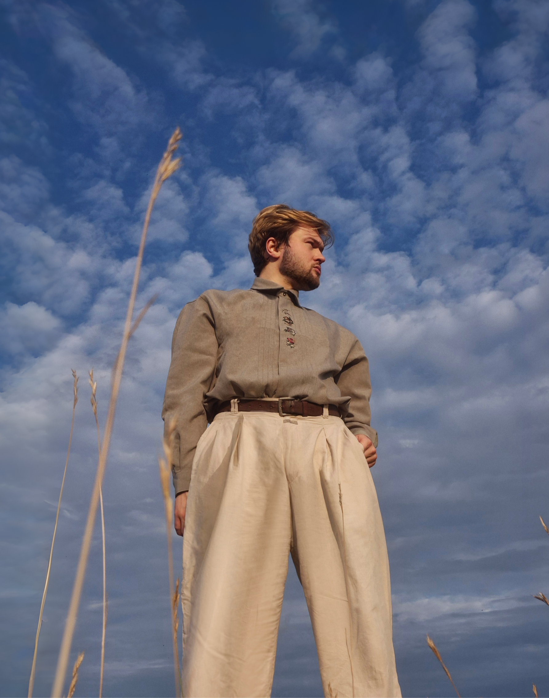

UX / UI / Web Design / Graphic / Logo / Branding / Typography / Web Development / AI / Art
DESIGN,
STRATEGY
&
INTERACTION
Every form of creating is a form of design.
Optimizing human-computer interactions is a topic I have always been interested in. I am eager to bridge the gap between user experience and aesthetically pleasing design.
Apr 2024 – Present
UI Designer · Freelance
Cycling Bear · Amsterdam
Mar 2024 – Present
Founder & AI Product Manager
MIAAC · Munich
Sep 2023 – Apr 2024
Senior Engineer
Quest Global · Munich
Oct 2021 – Aug 2023
UX Consultant Apr 2022 – Aug 2023
Data Consultant Oct 2021 – Apr 2022 Spiegel Institut · Munich & Ingolstadt
Data Consultant Oct 2021 – Apr 2022 Spiegel Institut · Munich & Ingolstadt
Mar 2021 – Sep 2021
UX Designer and Consultant
WinValue GmbH · Münster
German: Native (C2)
Dutch: Basic (A2)
English: Excellent (C2)
Spanish: Beginner (A1)
Sep 2019 – Aug 2020
M.Sc. Human Factors & Engineering Psychology (English-taught)
University of Twente · Enschede
Sep 2016 – Aug 2019
B.Sc. Psychology (English-taught)
University of Twente · Enschede
Feb 2018 – May 2018
Minor in Philosophy of Science and Technology
University of Twente · Enschede
UX & UI
- Click & performance analysis
- Wire framing
- Usability testing
- UX-Research
Coding
- HTML, CSS, Javascript, Python
- AI: Gemini, Antigravity, Base44, Claude
- Wordpress
Visual design
- Adobe: Lightroom, Photoshop, Illustrator
- Figma
- CapCut, Premiere Pro
- Canva